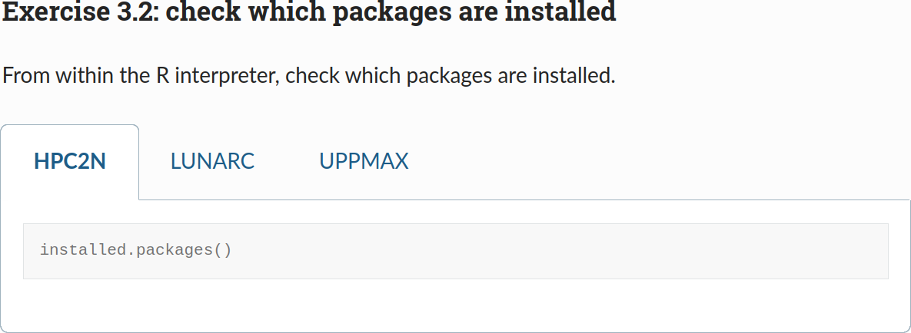
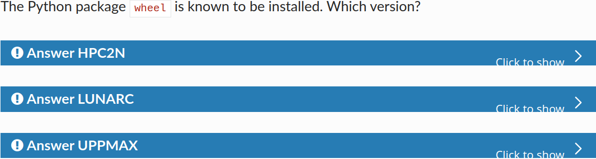

Lesson plan R by Richel¶
- Date: Tuesday 2024-10-24
- Course: R, part of R, Python, Julia, and Matlab in HPC
Schedule¶
| Time | Topic | Teacher(s) |
|---|---|---|
| 9:00 | (optional) First login | BB + PO + RB |
| 9:45 | Break | . |
| 10:00 | Introduction | RB |
| 10:10 | Syllabus | RB |
| 10:20 | Load modules and run | RB |
| 10:45 | Break | . |
| 11:00 | Packages | BB |
| 11:30 | Isolated environments | BB |
| 12:00 | Lunch | . |
| 13:00 | Batch | BB |
| 13:30 | Parallel | PO |
| 14:15 | Break | . |
| 14:30 | Simultaneous session | PO * RB * ?RP |
| 15:15 | Break | . |
| 15:30 | Machine learning | BB or PO |
| 16:00 | Summary and evaluation | RB |
| 16:15 | Done | . |
Preparation¶
Here is the current state of my sessions:
| Time | Topic | State |
|---|---|---|
| 10:00 | Introduction | 10/10 |
| 10:10 | Syllabus | 7/10 |
| 10:20 | Load modules and run | 7/10 |
| 14:30 | Simultaneous session | Done |
| 16:00 | Summary and evaluation | Done |
In general:
- Go through the material
- Do the exercises for all centers
- Check the exercise by creating a video per center
Let’s do this.
Also:
- [x] Document how to get and extract the tarball
Last session:
| Time | Topic | State |
|---|---|---|
| 10:00 | Introduction | Done |
| 10:10 | Syllabus | Done |
| 10:20 | Load modules and run | 7/10 |
| 14:30 | Simultaneous session | Done |
| 16:00 | Summary and evaluation | Done |
Currently, my sessions have two setups:

The tab look

The dropdown look
Today I feel the dropdown look to be cleaner, as it preserves vertical space better, so I’ll use that one instead. I do want to change the colors of the admonition per HPC center :-)
- [ ] change the colors of the admonition per HPC center
- I gave up here
Videos are done, so the material is finished.
TODO:
- [x] Fix layout
- [x] Fix
module load ... R/4.2.1 R/4.2.1 - [x] Fix mermaid graphs to match the exercise
- [x] Fix mermaid graphs to remove the command it shows,
especial ‘Load an R package library’ is confusing (in an earlier
mermaid version, one could add a newline before
library) - [x] Remove
module avail, as it is not a learning objective - [x] Check and prepare Priors
I don’t like my course material. It makes me lecture too much and I know I should not. Next course iteration, I will be pointing to the centers’ documentation more. I did not make the time to properly do this, mostly to take it easier on myself after some ruthless days of preparing the Python session.
- [ ] Next course iteration: make ‘Load and run R’ point to documentation more
What does need to be done:
- [x] Make summary match evaluation